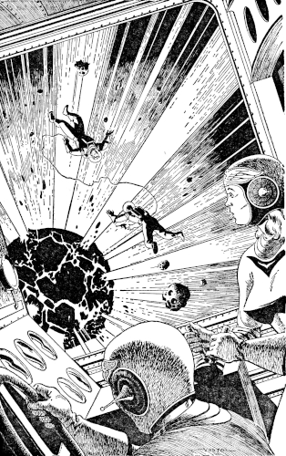

A bunch of kids in bright new uniforms,
transiting the constellations in a disreputable
old bucket of a space-ship—why should the
leathery-tentacled, chlorine-breathing
Eridans take them seriously?
[Transcriber's Note: This etext was produced from
Planet Stories Summer 1949.
Extensive research did not uncover any evidence that
the U.S. copyright on this publication was renewed.]
HQ TELWING CSN 30 JAN 27 TO CMDR DAVID FARRAGUT STRYKALSKI VII CO TRS CLEOPATRA FLEET BASE CANALOPOLIS MARS STOP SUBJECT ORDERS STOP ROUTE LUNA PHOBOS SYRTIS MAJOR TRANSSENDERS PRIORITY AAA STOP MESSAGE FOLLOWS STOP TRS CLEOPATRA AND ALL ATTACHED AND OR ASSIGNED PERSONNEL HEREBY RELIEVED ASSIGNMENT AND DUTY INNER PLANET PATROL GROUP STOP ASSIGNED TEMP DUTY BUREAU RESEARCH AND DEVELOPMENT STOP SUBJECT VESSEL WILL PROCEED WITHOUT DELAY FLEET EXPERIMENTAL SUBSTATION PROVING GROUNDS TETHYS SATURNIAN GROUP STOP CO WILL REPORT UPON ARRIVAL TO CAPT IVY HENDRICKS ENGINEERING OFFICER PROJECT WARP STOP SIGNED H. GORMAN SPACE ADMIRAL COMMANDING STOP END MESSAGE END MESSAGE END MESSAGE.
"Amen! Amen! Amen! Stop." Commander Strykalski smoothed out the wrinkled flimsy by spreading it carefully on the wet bar.
Coburn Whitley, the T.R.S. Cleopatra's Executive, set down his Martini and leaned over very slowly to give the paper a microscopic examination in the mellow light.
"Maybe," he began hopefully, "It could be a forgery?"
Strike shook his head.
Lieutenant Whitley looked crestfallen. "Then perhaps old Brass-bottom Gorman means some other guy named Strykalski?" To Cob, eight Martinis made anything possible.
"Could there be two Strykalskis?" demanded the owner of the name under discussion.
"No." Whitley sighed unhappily. "And there's only one Tellurian Rocket Ship Cleopatra in the Combined Solarian Navies, bless her little iron rump! Gorman means us. And I think we've been had, that's what I think!"
"Tethys isn't so bad," protested Strike.
Cob raised a hand to his eyes as though to blot out the sight of that distant moonlet. "Not so bad, he says! All you care about is seeing Ivy Hendricks again, I know you! Tethys!"
Strike made a passing effort to look stern and failed. "You mean Captain Hendricks, don't you, Mister Whitley? Captain Hendricks of Project Warp?"
Cob made a sour face. "Project Warp, yet! Sounds like a dog barking!" He growled deep in his throat and barked once or twice experimentally. The officer's club was silent, and a silver-braided Commodore sitting nearby scowled at Whitley. The Lieutenant subsided with a final small, "Warp!"
An imported Venusian quartet began to play softly. Strike ordered another round of drinks from the red-skinned Martian tending bar and turned on his stool to survey the small dance floor. The music and the subdued lights made him think of Ivy Hendricks. He really wanted to see her again. It had been a long time since that memorable flight when they had worked together to pull Admiral Gorman's flagship Atropos out of a tight spot on a perihelion run. Ivy was good to work with ... good to be around.
But there was apparently more to this transfer than just Ivy pulling wires to see him again. Things were tense in the System since Probe Fleet skeeterboats had discovered a race of group-minded, non-human intelligences on the planets of 40 Eridani C. They lived in frozen worlds that were untenable for humans. And they were apparently all parts of a single entity that never left the home globe ... a thing no human had seen. The group-mind. They were rabidly isolationist and they had refused any commerce with the Solar Combine.
Only CSN Intelligence knew that the Eridans were warlike ... and that they were strongly suspected of having interstellar flight....
So, reflected Strike, the transfer of the Cleopatra to Tethys for work under the Bureau of Research and Development meant innovations and tests. And Commander Strykalski was concerned. The beloved Old Aphrodisiac didn't take kindly to innovations. At least she never had before, and Strike could see no reason to suppose the cantankerous monitor would have changed her disposition.
"There's Celia!" Cob Whitley was waving toward the dance floor.
Celia Graham, trim in her Ensign's greys, was making her way through the crowd of dancers. Celia was the Cleopatra's Radar Officer, and like all the rest, bound with chains of affection to the cranky old warship. The Cleopatra's crew was a unit ... a team in the true sense of the word. They served in her because they wanted to ... would serve in no other. That's the way Strike ran his crew, and that's the way the crew ran Lover-Girl. Old Aphrodisiac's family was a select community.
There was a handsome Martian Naval Lieutenant with Celia, but when she saw the thoughtful expression on her Captain's face, she dismissed him peremptorily. Here was something, apparently, of a family matter.
"Well, I can't see anything to worry about, Skipper," she said when he had explained. "I should think you'd be glad of a chance to see Ivy again."
Cob Whitley leaned precariously forward on his bar-stool to wag a finger under Celia's pretty nose. "But he doesn't know what Captain Hendricks has cooked up for Lover-Girl, and you know the old carp likes to be treated with respect." He affected a very knowing expression. "Besides, we shouldn't be gallivanting around testing Ivy's electronic eyelash-curlers when the Eridans are likely to be swooshing around old Sol any day!"
"Cob, you're drunk!" snapped Celia.
"I am at that," mused Whitley with a foolish grin. "And I'd better enjoy it. There'll be no Martinis on Tethys, that's for sure! This cruise is going to interfere with my research on ancient twentieth century potables..."
Strike heaved his lanky frame upright. "Well, I suppose we'd better call the crew in." He turned to Cob. "Who is Officer of the Deck tonight?"
"Bayne."
"Celia, you'd better go relieve him. He'll have to work all night to get us an orbit plotted."
"Will do, Skipper," Celia Graham left.
"Cob, you'd better turn in. Get some sleep. But have the NPs round up the crew. If any of them are in the brig, let me know. I'll be on the bridge."
"What time do you want to lift ship?"
"0900 hours."
"Right." Cob took a last loving look around the comfortable officer's club and heaved a heavy sigh. "Tethys, here comes Lover-Girl. It's going to be a long, long cruise, Captain."
How long, he couldn't have known ... then.
The flight out was uneventful. Uneventful, that is for the T.R.S. Cleopatra. Only one tube-liner burned through, and only six hours wasted in nauseous free-fall.
Lover-Girl wormed her way through the asteroid belt, passed within a million miles of Jupiter and settled comfortably down on the airless field next to the glass-steel dome of the Experimental Substation on Tethys. But her satisfied repose was interrupted almost before it was begun. Swarms of techmen seemed to burst from the dome and take her over. Welders and physicists, naval architects and shipfitters, all armed with voluminous blueprints and atomic torches set to work on her even before her tubes had cooled. Power lines were crossed and re-crossed, shunted and spliced. Weird screen-like appendages were welded to her bow and stern. Workmen and engineers stomped through her companionways, bawling incomprehensible orders. And her crew watched in mute dismay. They had nothing to say about it...
Ivy Hendricks rose from her desk as Strike came into her Engineering Office. There was a smile on her face as she extended her hand.
"It's good to see you again, Strike."
Strykalski studied her. Yes, she hadn't changed. She was still the Ivy Hendricks he remembered. She was still calm, still lovely, and still very, very competent.
"I've missed you, Ivy." Strike wasn't just being polite, either. Then he grinned. "Lover-Girl's missed you, too. There never has been an Engineering Officer that could get the performance out of her cranky hulk the way you used to!"
"It's a good thing," returned Ivy, still smiling, "that I'll be back at my old job for a while, then."
Strykalski raised his eyebrows inquisitively. Before Ivy could explain, Cob and Celia Graham burst noisily into the room and the greetings began again. Ivy, as a former member of the Cleopatra's crew, was one of the family.
"Now, what I would like to know," Cob demanded when the small talk had been disposed of, "is what's with this 'Project Warp'? What are you planning for Lover-Girl? Your techmen are tearing into her like she was a twenty-day leave!"
"And why was the Cleopatra chosen?" added Celia curiously.
"Well, I'll make it short," Ivy said. "We're going to make a hyper-ship out of her."
"Hyper-ship?" Cob was perplexed.
Ivy Hendricks nodded. "We've stumbled on a laboratory effect that warps space. We plan to reproduce it in portable form on the Cleopatra ... king size. She'll be able to take us through the hyper-spatial barrier."
"Golly!" Celia Graham was wide-eyed. "I always thought of hyperspace as a ... well, sort of an abstraction."
"That's been the view up to now. We all shared it here, too, until we set up this screen system and things began to disappear when they got into the warped field. Then we rigged a remote control and set up telecameras in the warp...." Ivy's face sobered. "We got plates of star-fields ... star-fields that were utterly different and ... and alien. It seems that there's at least one other space interlocked and co-existent with ours. When we realized that we decided to send a ship through. I sent a UV teletype to Admiral Gorman at Luna Base ... and here you are."
"Why us?" Cob asked thoughtfully.
"I'll answer that," offered Strike, "Lover-Girl's a surge circuit monitor, and it's a safe bet this operation takes plenty of power." He looked over to Ivy. "Am I right?"
"Right on the nose, Strike," she returned. Then she broke into a wide smile. "Besides, I wouldn't want to enter an alien cosmos with anyone but Lover-Girl's family. It wouldn't be right."
"Golly!" said Celia Graham again. "Alien cosmos ... it sounds so creepy when you say it that way."
"You could call it other things, if you should happen to prefer them," Ivy Hendricks said, "Subspace ... another plane of existence. I...."
She never finished her sentence. The door burst open and a Communications yeoman came breathlessly into the office. From the ante-room came the sound of an Ultra Wave teletype clattering imperiously ... almost frantically.
"Captain Hendricks!" cried the man excitedly, "A message is coming through from the Proxima transsender ... they're under attack!"
Strykalski was on his feet. "Attack!"
"The nonhumans from Eridanus have launched a major invasion of the solar Combine! All the colonies in Centaurus are being invaded!"
Strike felt the bottom dropping out of his stomach, and he knew that all the others felt the same. If this was a war, they were the ones who would have to fight it. And the Eridans! Awful leathery creatures with tentacles ... chlorine breathers! They would make a formidable enemy, welded as they were into one fighting unit by the functioning of the group-mind....
He heard himself saying sharply into Ivy's communicator: "See to it that my ship is fueled and armed for space within three hours!"
"Hold on, Strike!" Ivy Hendricks intervened, "What about the tests?"
"I'm temporarily under Research and Development command, Ivy, but Regulations say that fighting ships cannot be held inactive during wartime! The Cleopatra's a warship and there's a war on now. If you can have your gear jerry-rigged in three hours, you can come along and test it when we have the chance. Otherwise the hell with it!" Strykalski's face was dead set. "I mean it, Ivy."
"All right, Strike. I'll be ready," Ivy Hendricks said coolly.
Exactly three hours and five minutes later, the newly created hyper-ship that was still Old Aphrodisiac lifted from the ramp outside the Substation dome. She rose slowly at first, the radioactive flame from her tubes splashing with sun-bright coruscations over the loading pits and revetments. For a fleeting instant she was outlined against the swollen orb of Saturn that filled a quarter of Tethys' sky, and then she was gone into the galactic night.
Aboard, all hands stood at GQ. On the flying bridge Strykalski and Coburn Whitley worked steadily to set the ship into the proper position in response to the steady flood of equations that streamed into their station from Bayne in the dorsal astrogation blister.
An hour after blasting free of Tethys was pointed at the snaking river of stars below Orion that formed the constellation of Eridanus.
When Cob asked why, Strike replied that knowing Gorman, they could expect orders from Luna Base ordering them either to attack or reconnoiter the 40 Eridani C system of five planets. Strykalski added rather dryly that it was likely to be the former, since Space Admiral Gorman had no great affection for either the Cleopatra or her crew.
Ivy Hendricks joined them after stowing her gear, and when Whitley asked her opinion, she agreed with Strike. Her experiences with Gorman had been as unfortunate as any of the others.
"I was afraid you'd say that," grumbled Cob, "I was just hoping you wouldn't."
The interphone flashed. Strike flipped the switch.
"Bridge."
"Communications here. Message from Luna Base, Captain."
"Here it is," Strykalski told Cob. "Right on time."
"Speak of the devil," muttered the Executive.
"From the Admiral, sir," the voice in the interphone said, "Shall I read it?"
"Just give me the dope," ordered Strike.
"The Admiral orders us to quote make a diversionary attack on the planet of 40 Eridani C II unquote," said the squawk-box flatly.
"Acknowledge," ordered Strykalski.
"Wilco. Communications out."
Strike made an I-told-you-so gesture to his Executive. Then he turned toward the enlisted man at the helm. "Quarter-master?"
The man looked up from his auto-pilot check. "Sir."
"Steady as she goes."
"Yes, sir."
"And that," shrugged Ivy Hendricks, "Is that."
Three weeks passed in the timeless limbo of second-order flight. Blast tubes silent, the Cleopatra rode the curvature of space toward Eridanus. At eight and a half light years from Sol, the second-order was cut so that Bayne could get a star sight. As the lights of the celestial globe slowly retreated from their unnatural grouping ahead and astern, brilliant Sirius and its dwarf companion showed definite disks in the starboard ports. At a distance of 90,000,000 miles from the Dog Star, its fourteen heavy-gravity planets were plainly visible through the electron telescope.
Strykalski and Ivy Hendricks stood beside Bayne in the dorsal blister while the astrogator sighted Altair through his polytant. His long, horse face bore a look of complete self-approbation when he had completed his last shot.
"A perfect check with the plotted course! How's that for fancy dead reckoning?" he exclaimed.
He was destined never to know the accolade, for at that moment the communicator began to flash angrily over the chart table. Bayne cut it in with an expression of disgust.
"Is the Captain there?" demanded Celia Graham's voice excitedly.
Strike took over the squawk-box. "Right here, Celia. What is it?"
"Radar contact, sir! The screen is crazy with blips!"
"Could it be window?"
"No, sir. The density index indicates spacecraft. High value in the chlorine lines...."
"Eridans!" cried Ivy.
"What's the range, Celia?" demanded Strike. "And how many of them are there?"
The sound of the calculator came through the grill. Then Celia replied: "Range 170,000 miles, and there are more than fifty and less than two hundred. That's the best I can do from this far away. They seem to have some sort of radiation net out and they are moving into spread formation."
Strike cursed. "They've spotted us and they want to scoop us in with that force net! Damn that group-mind of theirs ... it makes for uncanny co-ordination!" He turned back to the communicator. "Cob! Are you on?"
"Right here, Captain," came Cob Whitley's voice from the bridge.
"Shift into second-order! We'll have to try and run their net!"
"Yes, sir," Whitley snapped.
"Communications!" called Strike.
"Communications here."
"Notify Luna Base we have made contact. Give their numbers, course, and speed!"
Ivy could feel her heart pounding under her blouse. Her face was deadly pale, mouth pinched and drawn. This was the first time in battle for any of them ... and she dug her fingernails into her palms trying not to be afraid.
Strykalski was rapping out his orders with machine-gun rapidity, making ready to fight his ship if need be ... and against lop-sided odds. But years of training were guiding him now.
"Gun deck!"
A feminine voice replied.
"Check your accumulators. We may have to fight. Have the gun-pointers get the plots from Radar. And load fish into all tubes."
"Yes, sir!" the woman rapped out.
"Radar!"
"Right here, Skipper!"
"We're going into second-order, Celia. Use UV Radar and keep tabs on them."
"Yes, Captain."
Strike turned to Ivy Hendricks. "Let's get back to the bridge, Ivy. It's going to be a hell of a rough half hour!"
As they turned to go, all the pin-points of light that were the stars vanished, only to reappear in distorted groups ahead and behind the ship. They were in second-order flight again, and traveling above light speed. Within seconds, contact would be made with the advance units of the alien fleet.
Old Aphrodisiac readied herself for war.
Like a maddened bull terrier, the old monitor charged at the Eridan horde. Within the black hulls strange, tentacled creatures watched her in scanners that were activated by infrared light. The chlorine atmosphere grew tense as the Tellurian warship drove full at the pulsating net of interlocked force lines. Parsecs away, on a frozen world were a dull red shrunken sun shone dimly through fetid air, the thing that was the group-mind of the Eridans guided the thousand leathery tentacles that controlled the hundred and fifty black spaceships. The soft quivering bulk of it throbbed with excitement as it prepared to kill the tiny Tellurian thing that dared to threaten its right to conquest.
Old Lover-Girl tried gallantly to pierce the strange trap. She failed. The alien weapons were too strange, too different from anything her builders could have imagined or prepared her to face. The net sucked the life from her second-order generators, and she slowed, like the victim of a nightmare. Now rays of heat reached out for her, grazing her flanks as she turned and twisted. One touched her atmospheric fins and melted them into slowly congealing globes of steel glowing with a white heat. She fought back with whorls of atomic fire that sped from her rifles to wreak havoc among her attackers.
Being non-entities in themselves, and only limbs of the single mentality that rested secure on its home world, the Eridans lacked the vicious will to live that drove the Tellurian warship and her crew. But their numbers wore her down, cutting her strength with each blow that chanced to connect.
Torpedoes from the tubes that circled her beam found marks out in space and leathery aliens died, their black ships burst asunder by the violence of new atoms being created from old.
But there were too many. They hemmed her in, heat rays ever slashing, wounding her. Strykalski fought her controls, cursing her, coaxing her. Damage reports were flowing into the flying bridge from every point in the monitor's body. Lover-Girl was being hurt ... hurt badly. The second-order drive was damaged, not beyond repair, but out of commission for at least six hours. And they couldn't last six hours. They couldn't last another ten minutes. It was only the practiced hands of her Captain and crew that kept the Cleopatra alive....
"We're caught, Ivy!" Strike shouted to the girl over the noises of battle. "She can't stand much more of this!"
Cob was screaming at the gun-pointers through the open communicator circuit, his blood heated by the turbulent cacophony of crackling rays and exploding torpedoes. "Hit 'em! Damn it! Damn it, hit 'em now! Dead ahead! Hit 'em again!..."
Ivy stumbled across the throbbing deck to stand at Strykalski's side. "The hyper drive!" she yelled, "The hyper drive!"
It was a chance. It was the only chance ... for Lover-Girl and Ivy and Cob and Celia ... for all of them. He had to chance it. "Ivy!" he called over his shoulder, "Check with Engineering! See if the thing's hooked into the surge circuit!"
She struggled out of the flying bridge and down the ramp toward the engine deck. Strike and Cob stayed and sweated and cursed and fought. It seemed that she would never report.
At last the communicator began to flash red. Strike opened the circuit with his free hand. "All right?" he demanded with his heart in his throat.
"Try it!" Ivy shouted back.
Strykalski lurched from his chair as another ray caught the ship for an instant and heated a spot on the wall to a cherry red. Gods! he prayed fervently. Let it work!
A movement of the ship threw him to the deck. He struggled to his feet and across to the jerry-rigged switchboard that controlled the hyper drive's warp field. With a prayer on his lips, he slapped at the switches with wild abandon....
The sudden silence was like a physical blow. Strike staggered to the port and looked out. No alien ships filled the void with crisscrossing rays. No torpedoes flashed. The Cleopatra was alone, floating in star-flecked emptiness.
There were no familiar constellations. The stars were spread evenly across the ebony bowl of the sky, and they looked back at him with an alien, icy disdain.
The realization that he stood with a tiny shell, an infinitesimal human island lost in the vastness of a completely foreign cosmos broke with an almost mind-shattering intensity over his brain!
He was conscious of Cob standing beside him, looking out into this unknown universe and whispering in awe: "We're the aliens here...."
Ivy Hendricks came into the bridge then, a haggard look around her eyes. "I came up through the ventral blister," she said, "Bayne is down there and he's having fits. There isn't a star in sight he recognizes and the whole hull of the ship is glowing!"
Cob and Strykalski rushed back to the port, straining to see the back-curving plates of the hull. Ivy was right. The metal, and to a lesser extent, even the leaded glassteel of the port was covered with a dim, dancing witchfire. It was as though the ship were being bombarded by a continuous shower of microscopic fire bombs.
Whitley found refuge in his favorite expression. "Ye gods and little catfish!"
Strike turned to Ivy. "What do you think it is?"
"I ... I don't know. Matter itself might be different ... here."
Strykalski found himself at the port again, looking out into the vast stretch of alien void. Terror was seeping like dampness through him, stretching cold fingers into his heart and mind. He realized that everyone on board must feel the same way. It was the old human devil rising from the pit of the primeval past. Fear of the unknown, of the strange. And there was loneliness. From the dark corners of his mind, the terrible loneliness came stealing forth. Never had a group of human beings been so frighteningly apart from their kind. He felt rejected, scorned and lost.
The others felt it, too. Ivy and Cob drew closer, until all three stood touching each other; as though they could dispel the loneliness of the unnatural environment by the warmth of human, animal contact. Celia came into the bridge softly ... just to be near her friends.
It was only the fact that they could return at will to their own space ... and the danger of the questing Eridans ... that kept one or all from crying out in utter childish fear. Celia Graham whimpered softly and slipped her hand into Cob's. He squeezed it to give her a reassurance he did not feel.
Then Strike broke the spell. The effort was great, but it brushed away the shadows that had risen to plague them from the tortured abyss of racial memory. It brought them back to what they were: highly civilized people, parts of an intricately technological culture. Their ship was a part of that culture. The only part they could cling to. The Cleopatra demanded attention and service, and her demanding saved them.
"Cob," Strike directed with forced briskness, "Take over Damage Control. See what can be done about the second-order drive."
Cob pulled himself together, smiling as all the accustomed pieces of his life began to fit together again. It didn't matter that they were in an unknown cosmos. Damage Control was something he knew and understood. He smiled thankfully and left the bridge.
"Maintain a continuous radar-watch, Celia. We can't tell what we may encounter here."
"Yes, Captain," replied Celia gratefully.
Strykalski reached for the squawk-box and called Bayne.
"Astrogation here," came the shaky reply. In the exposed blisters the agoraphobia must be more acute, reasoned Strike, and Bayne must have been subconsciously stirred up by the disappearance of the familiar stars that were his stock-in-trade.
"Plot us a course to 40 Eridani C, Bayne," Strykalski directed. "On gyro-headings."
"What?" The astrogator sounded as though he thought Strike had lost his mind. "Through this space?"
"Certainly," Strykalski insisted quietly. "You're so proud of your dead-reckoning. Here's a chance for you to do a real job. Get me an orbit."
"I ... all right, Captain," grumbled Bayne.
Strike turned to Ivy Hendricks. "Well, Captain Hendricks, this is some gadget you have dreamed up out of your Project Warp," he breathed shakily. "At least the fat's out of the fire for the time being...."
Ivy looked out of the port and back with a shudder. "I hope so, Strike. I hope so."
They fell silent, seeking comfort in each other's presence.
The second-order drive repaired, Old Aphrodisiac moved out through the alien space toward the spot where 40 Eridani C existed on the other side of the barrier.
The ship's tactical astrophysicist brought in some disturbing reports on the stars that shone brightly all around her. They fitted the accepted classifications in all particulars ... except one. And that one had the scientist tearing his hair. The mass of every observable body except the ship herself was practically non-existent. Even the two planetary systems discovered by the electron telescope flouted their impossible lack of mass.
Ivy suggested that since the Cleopatra and her crew were no part of this alien cosmos, no prime-space instruments could detect the errant mass. Like a microscopic bull in a gargantuan china shop, the Tellurian warship existed under a completely different set of physical laws than did the heavenly bodies of this strange space.
It was pure conjecture, but it seemed well supported by the observable facts. The hull continued to glow with its unnatural witchfire, and soon disturbing reports were coming in from the Damage Control section that the thickness of the outer hull was actually being reduced. The rate was slow, and there was no immediate danger, but it was nevertheless unnerving to realize that Lover-Girl was being dissolved by something. Also, the outside Geigs recorded a phenomenal amount of short radiation emanating from the ship herself. The insulation kept most of it from penetrating, but tests showed that the strange radiation's source was the glow that clung stubbornly to the spacer's skin.
A tense week passed and then the ship neared the spot where a change over to prime-space could be effected. According to Bayne's calculations, 40 Eridani C would be within 40,000,000 miles of them when the ship emerged from hyper space.
And then the Radar section picked up the planetoids. Millions of them, large and small, lay in a globular cluster dead ahead. They spread out in all directions for more than half a parsec ... dull, rocky little worlds without a gram of detectable mass.
All that waited for the Cleopatra in her own cosmos was a hot reception at the hands of the defenders of 40 Eridani C II, while here was mystery at close range. Mystery that was not cosmic in scope ... just a swarm of innocuous seeming planetoids ... the first explorable worlds that they had neared in this universe. Strike decided to heave to and examine their find. Ivy wanted samples and though no one said it in so many words ... no one was anxious for another encounter with the rapacious Eridans. With typically human adaptiveness they had sublimated their fear of the unknown space in which they found themselves. Curiosity took the place of fear and here was something close at hand to probe. Anthropoid inquisitiveness prevailed.
The Cleopatra slowed, stopped. Strike and Cob Whitley suited up and armed themselves with spring-guns. In their clumsy space armor they dropped through Lover-Girl's ventral valve into the void. The monitor's glowing bulk retreated as they jetted toward the swarm of tiny worlds. Their space suits, too, glowed with the witchfire, outlining them against the eternal night.
Back in the monitor's Communications shack, Ivy Hendricks and Celia Graham stood with Bayne and the other officers around the two way communicator that linked the two explorers with the ship.
Out in space, Strike and Cob bound themselves together with a length of thin cable. They dropped down under power toward the planetoid they had selected to explore.
"What's it like?" Ivy's voice crackled in their headsets.
"Can't tell from this distance. We're still a good five miles away," replied Strykalski.
"Looks like any other planetoid to me," averred Whitley.
"Maybe you'd better fire a shot into the surface before you try landing, Strike," Ivy suggested.
"Why?"
"Just a hunch." Her voice sounded worried.
"Okay, Ivy," Strike replied. "Cob, take a pot shot at it will you. You should be able to hit it from here ... it's twenty miles wide."
Cob was disgusted. "And me the best shot in my class back at the Academy!" He drew his spring-gun and snapped a solid steel slug at the looming worldlet....

What happened next, they never knew exactly. On the dark surface of the planetoid a blazing bubble of white incandescence appeared, expanding within split seconds to all but obscure the whole bulk of the disk. It churned and whirled and flashed, mushrooming out in a hellish coruscation of destruction. The blaze of light outlined the two men and the ship and the planetoids within a fifty mile circle and the expanding shock wave fanned out. It struck the two space armored men to send them spinning wildly. The glowing bulk of the monitor reeled and bucked. Strike felt himself whipping up and down at the end of the cable that bound him to Cob Whitley. He felt himself being buffeted and burned by the dazzling flare of atomic fire. The merciful blackness spread itself like a curtain over his tortured eyes....
Strykalski opened his eyes and stretched his battered body. His head was bandaged, and he could feel the familiar tingle of paratannic salve on his burns. Pain still throbbed in little red needles behind his dazzled eyes. He drew a long rasping breath and looked around him. He was in the Cleopatra's infirmary. A Medic was standing near the bulkhead. Cob lay on a bunk nearby. Ivy and Celia Graham were leaning over him.
"Great Space!" he muttered, "What happened?"
"The shot Cob fired ... it ... it blew up," Celia said.
"That's putting it rather mildly. But why? And how did we get back here?"
"Celia found you on the Radar," said Ivy, "And Bayne took a skeeterboat out and picked you up after we got Lover-Girl back right side up."
"Cob?"
As though in answer to Strykalski's question, a low moan came from the bandaged form of the Executive. "Ohhh.... Ye gods and ... little catfish! I wish I ... had a Martini...."
Strike smiled through cut lips. Cob was all right. He looked up at Ivy again. "But what happened?"
"Listen!" Ivy was saying excitedly, "I've got it! The answer! All the answers, I think! The glowing of the ship ... the lack of mass for everything native to this space ... the solid shot exploding!"
Things were becoming clear to Strykalski now. Of course! He sat up painfully. It was really simple enough when one thought it through. In negative space....
Ivy went on. "Strike, the ship glows because there is matter everywhere ... even in interstellar space. Not much, but enough to bombard the hull with tiny particles. The radiation the Geigs picked up is caused by atomic disintegration! We've had fission and fusion for two hundred years now ... but this is the complete transmutation of matter to energy! The complete utilization of atomic energy! And the thing that causes it is the reaction between our kind of matter and...."
"Contraterrene matter!" he exclaimed. "That's it, isn't it Ivy?"
The girl nodded. "The charges of the atomic components are reversed in this space! You would have made yourself into a ... a bomb if you had touched that planetoid out there!" Her face paled. "Oh, Strike! You almost killed yourself!"
Thoughts were boiling around in Strykalski's head now. An idea ... a crazy, audacious idea was taking shape.
He swung his legs over the side of the bunk. "Listen, Ivy ... in this space, we are the unnatural form of matter, and here we are sort of walking bombs. Right?"
She nodded, puzzled.
"Well, what if we should transport some contraterrene matter back into prime-space ... a planetoid for example ... what then?"
The girl's face showed comprehension. "It would be the most devastating bomb ever dreamed of. It would release every erg in its component atoms the minute it came into contact with anything terrene!" She stopped short, her eyes wide. "Strike!"
"Would it work, Ivy?" he pursued.
"Yes!" she gasped, "Yes, I think it would!"
"Can we do it?"
"I ... I think so. Lover-Girl has power to burn. And we could set up the screens on two skeeterboats so that ... yes! By heaven, it will work! All we have to do is make and set up the equipment!"
Cob sat up on his bunk and gave a low whistle. "Ye gods! No one can ever accuse you two of having small ideas, that's for sure!"
"It will work!" Ivy insisted. Her eyes narrowed. She was all the engineer now, working out a problem. "The explosion that almost killed you and set Lover-Girl on her beam ends came from the annihilation of one tiny slug of steel at a distance of five miles. Just think what the destruction of a twenty mile planetoid will do when we...."
"How long will it take?" Strike interrupted.
"Give me six hours."
"Start now," he ordered, "And somebody hand Cob and me our pants. We've got work to do!"
The next hours were a nightmare of feverish activity aboard the T.R.S. Cleopatra. Two of her six skeeterboats were fitted with hyper screens that were made in the machine shop under Ivy Hendricks' close supervision. Power was shunted from the surge circuit generators and run out through automatic spools to the screen bearing skeeterboats to form the two poles of the hyper warp. Ivy was everywhere at once, giving orders, overseeing construction. Strike and Cob co-ordinated the efforts of the crew and workmen.
"We'll pick out our planetoid," Strike explained to them, "And line up our skeeters on an arbitrary north-south axis. The spools will pay out the power lines as the boats travel. When everything is aligned, we turn on the juice and hope for the best."
"Then," interjected Bayne, "as the planetoid takes its place in prime space without orbital velocity ... and only some 4,000,000 miles from 40 Eridani C ... we clear out. Fast. 40 Eridani C is an M6 star ... surface temperature only about 3,000 Centigrade. It's small ... smaller than Sol, because it has shrunk. But under its semi-solid crust there are trillions of tons of matter that will burst free as soon as anything cracks the surface tension. Our bomb should act as a fuse to light one of the biggest fire-crackers ever imagined."
"One thing," said Ivy to Strike, "whoever pilots the skeeters ... and I presume you intend to handle one yourself ... will have to be extremely careful. As soon as our planetoid exists in prime-space it will have a planetoid's mass and gravity. Don't be caught with your jets cold. I'd miss you, Strike."
Celia Graham interrupted the conference to tell them that the equipment was ready, and the ship in position. Strike looked around at the suddenly tense faces of his companions. He didn't like to think what failure might mean to them ... to Terra and the whole Solar Combine. He rose to his feet purposefully.
"Let's go," he said.
The skeeterboat dove out of the valve trailing its cable. Strike glanced back through the rear port to see the second shark-like shape close behind. Even banged up as he was, Cob would let no one take the second boat but himself. Strike's smile was broad. Good man to have around, that Coburn Whitley.
Ahead lay the tiny world that had been selected for annihilation. It was a black blot on the star-spangled darkness of space. A thirty mile sphere, it floated serenely along its orbit ... an innocuous chunk of matter that here was just that ... and elsewhere would be the most fearful bomb ever guided by the hand of man.
Strike looked back at the glowing shape of Old Aphrodisiac. She lured him like a familiar scene, a friendly voice. In all this alien vastness, only his beloved ship was safety.
He looked around for Cob's skeeter. It was barely visible now, some twenty miles away as it fanned out to take up its position at the south pole of the planetoid.
The tiny world drew near, and Strike veered to find his own station. Jockeying the skeeterboat carefully, he found the proper spot marked by the beacons that fanned out from the Cleopatra's prow and stern.
Cob signalled from the opposite pole that he, too, was ready. This, as they said in the flicks, was it.
He called Ivy on the radiophone.
"All right, Strike," her voice came back, "We'll all go through together. Ten seconds."
"Check."
"Remember to be ready to blast away from that chunk of rock, you two. As soon as it hits prime-space it will have plenty of gravity."
"Right, Ivy," Cob's voice came metallically.
"Six seconds....
"Five seconds....
"Four seconds ... three ... two ... NOW!"
Strike was dazzled by the sudden shift of lighting. The planetoid was aglow with the dancing, swirling witchfire! The skeeterboat sank toward the bright surface with a sickening lurch. Strike shoved the throttle forward and looked fearfully for a flare of fire at the south pole. There was none. Cob had gotten clear, too. The power cable snapped, but it didn't matter now. Its work was done.
The Cleopatra lay ahead now, the fire gone from her hull. Behind her blazed the familiar beacon of Achernar. Off to the right Sirius A and B dominated the sky. And near at hand below, the turbulent, smoky red surface of 40 Eridani C smouldered against the familiar backdrop of the Milky Way. Already the contraterrene planetoid was plunging toward that sullen sphere. There wasn't much time to get clear.
Strike flung his skeeter through the open hatch close on the exhaust of Cob's boat. Valves hissed shut and Lover-Girl flashed away—homeward.
One week later, and just off Sirius B, Old Aphrodisiac met the Eridan fleet again, but with a difference....
This time the black ships made no move to stop her. Their actions were incoherent, insane. They milled about in a swirling cluster, colliding with their fellows or careening off into the void.
They floundered erratically, their co-ordination shattered. Even any evidence of intelligent guidance was missing.
The Cleopatra flashed by, not even deigning to fire a shot at them.
Strike shuddered as he watched them in the scanners. In his mind he could see the senseless, churning masses of flesh that lived mindlessly within the black hulls. His thoughts flew far afield to an icy world that had turned suddenly into an uninhabitable desert with temperatures soaring past the melting point of lead. He saw a dull red sun pulsating in cosmic agony, blossoming out into a menacing ball of white flame as its internal fires leaped to freedom through its shattered crust. He saw a star spending its failing substance prodigally in one bright carnival of destruction. And he saw its planets writhing as the sudden blast of heat speeded molecular velocities to the speed of escape and sent great clouds of superheated chlorine hissing into the void.
But best of all, he imagined the horrible death of a thing that was the sole co-ordinator and reasoning agent for a race of ugly tentacled creatures. Strykalski saw the death of the Eridan group-mind....
Old Aphrodisiac settled herself wearily onto the ramp of the Hamilton Field Spaceport. Her valves opened with a sighing sound. It was as though the ship herself had given voice to her contentment. She was home.
The lights of the Administration building glittered against the dark backdrop of the California hills, and the field lights flamed against the stillness of the night.
Strike and Ivy stood near the open port. "It's all over, Ivy," he said, "We're safe now."
Ivy raised her eyes to the sky where the stars flecked the night. Below Orion hung the jewelled thread of Eridanus.
The girl drew a shuddering breath. "It's a terrible thing to ... to murder a star."
Strike remained silent. There was nothing to say.
It would take tardy light more than fifteen years to bring news of the sudden flare of reckless life in that small star ... an orgy that would sap its last reserves of strength and leave it a dark and frigid ember in the lonely void.